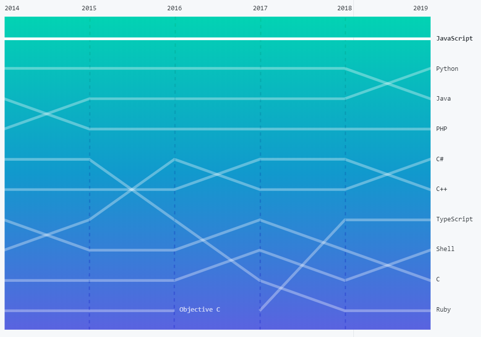

Teaching Team
Note: Begin email header with “FIT2095.â€
Changing Tutorial and Lab Allocations
- Academics have no privileges in the Allocate+ system – It's purely an admin issue
- There is a link in Allocate+ that allows you to submit a request for a change in allocation
Assessment – Non-Exam
- Contribution
- Â Exam (60%)
- Pre-reading Quizzes (10%): Max 10 Moodle MCQ's in each quiz
- Workshop Quizzes (10%): Max 5 multi-part Moodle short answer questions in each quiz
- Labs (20%)
Assessments
- Exam
- Closed Book, 2 hours
- Detailed Questions on non-trivial presented code fragments (50%)
- You will not be required to code from scratch, BUT you will be asked to analyse non-trivial fragments of presented code including correcting
and interpreting the code
- The presented code will not be unseen; it will come from labs, slide-sets,
quizzes or tasks you have been asked to complete – Other questions (50%)
- You will also be asked other questions that test your knowledge and understanding of the unit's content
- These may include code-related issues
- Sample questions will be posted towards the end of the
semester
- Pre-reading Quizzes
- From Week 2, There will be an online Moodle MCQ quiz each week
- Quiz questions will be on:
- The week's required reading (slide set + …)
- Which you should have read before attempting the quiz
- Two attempts allowed, correct answers only revealed after the quiz closes
- They check you have done the pre-reading
- Your answers to the quiz questions:
- Correct answers and your marks are available as soon as
the quiz closes
- The mark will be available on Moodle.
- Workshop Quizzes
- From Week 2, there will be a workshop quiz
- Quiz questions will be on:
- The week's required reading (slide set + …)
- Which you have already read
- Which you have proved by completing and passing a Moodle MCQ quiz
- They check for a deep understanding and synthesis of the upcoming week's
material
- Your answers will be marked ASAP
- The mark will be available on Moodle.
- Labs
- We will build/modify Web applications including:
- Server-side applications using Node.js, Express.js, and MongoDB
- A rich client-side, "Web" application that demonstrates important new HTML5/CSS3 features and elementary and advanced JavaScript features and design patterns using Angular
- You will be interviewed during your lab time to make sure you understand the code you are presenting for marking. Less than a confident understanding = 0 marks !!!
- You may be asked to develop a little task that is very related to your lab to measure your understanding and the genuineness of your work
- PRE-LAB PREPARATION IS ESSENTIAL
- Labs are a place to tie up loose ends
- e.g. get advice from your tutor on how to get around any roadblocks you have encountered
or ask questions to resolve difficulties you are having with the week's material (you can do this in tutorials as well)
Tutorials
- The Point of the Tutorials
- Preparation for the upcoming lab
- Where appropriate this will involve tutors outlining possible solutions
to the week's lab work
- Otherwise, it will be a Q and A session
- Enforced consultation sessions focussing on the week's
material
- To get around roadblocks
- Tutor discussion and help
- Peer discussion and help
Teaching approach
Lecture and/or tutorials or problem classes
This teaching and learning approach helps students to initially encounter information via prescribed pre-reading materials, discuss, explore and be quizzed on this information during a subsequent workshop (timetabled as a lecture), and put it into practice in a hands-on lab environment that is preceded by a lab preparation tutorial.
The MEAN Stack
 MEAN is a free and open-source JavaScript software stack for building dynamic websites and web applications.
The MEAN stack is MongoDB, Express.js, Angular, and Node.js. Because all components of the MEAN stack support programs are written in JavaScript, MEAN applications can be written in one language for both server-side and client-side execution environments.
The components of the MEAN stack are as follows:
MEAN is a free and open-source JavaScript software stack for building dynamic websites and web applications.
The MEAN stack is MongoDB, Express.js, Angular, and Node.js. Because all components of the MEAN stack support programs are written in JavaScript, MEAN applications can be written in one language for both server-side and client-side execution environments.
The components of the MEAN stack are as follows:
- MongoDBÂ a NoSQL database
- MongoDB is a NoSQL open-source, cross-platform document-oriented database program that JSON-like documents with schemas.
- Express.js a web application framework that runs on Node.js
- Express is a light-weight web application framework to organise web application into an MVC architecture on the server-side.
- Angular, JavaScript MVC frameworks that run in-browser JavaScript engines,
- Angular is a structural framework for dynamic web apps. It lets you use HTML as your template language and enables you to extend HTML's syntax to express your application's components clearly and succinctly.
- Node.js, an execution environment for event-driven server-side and networking applications
Several variations on the traditional MEAN stack are available by replacing one or more of the components with similar (typically Javascript-based) frameworks. For example, in a MEEN stack, the JavaScript MVC framework Ember.js is used instead of Angular.
Why JavaScript?
For many reasons:
- very easy to learn
- free and available everywhere
- huge community and support
- for frontend and backend development
- Node.js is very popular. It has more than 664726 free packages on NPM (Node Package Manager)
The following figure shows the number of pull requests for the fifteen most popular languages on GitHub.[source]

JavaScript: A Quick Guide
Question: is there a simple, light, online, and fast platform, where I can test and run my JavaScript code?
Answer: YES. Have a look at
 https://es6console.com/
Question: What if I need to run Javascript locally??
Answer: Save your code in a JS file (e.g. app.js) and run the node command (after installing node.JS):
$ node app.js
Binding (a variable name to value) in JavaScript: let, const, and var
- let allows you to declare variables that are limited in scope to the block, statement, or expression on which it is used.
- This is unlike the var keyword, which defines a variable globally, or locally to an entire function regardless of block scope.
function varTest() {
var x = 1;
if (true) {
var x = 2; // same variable!
console.log(x); // 2
}
console.log(x); // 2
}
function letTest() {
let x = 1;
if (true) {
let x = 2; // different variable
console.log(x); // 2
}
console.log(x); // 1
}
varTest();
letTest();
- In the above code, variables declared by let have their scope in the block for which they are defined, as well as in any contained sub-blocks.
- The main difference is that the scope of a var variable is the entire enclosing function.
- const:Â Constants are block-scoped, much like variables defined using the let statement. The value of a constant cannot change through re-assignment, and it can't be redeclared.
const number = 42;
try {
number = 99;
} catch(err) {
console.log(err);
// expected output: TypeError: invalid assignment to const `number'
// Note - error messages will vary depending on browser
}
console.log(number);
// expected output: 42
More details:
Control flow
if...else statement
Use the if statement to execute a statement if a logical condition is true. Use the optional else clause to execute a statement if the condition is false. An if statement looks as follows:
if (condition_1) {
statement_1;
} else if (condition_2) {
statement_2;
} else if (condition_n) {
statement_n;
} else {
statement_last;
}
//To execute multiple statements, group them within a block statement
if (condition) {
statement_1_runs_if_condition_is_true;
statement_2_runs_if_condition_is_true;
} else {
statement_3_runs_if_condition_is_false;
statement_4_runs_if_condition_is_false;
}
Example:
let theNumber = Number(prompt("Pick a number"));
if (!Number.isNaN(theNumber)) {
console.log("Your number is the square root of " +
theNumber * theNumber);
}else{
console.log('Your input is not a number');
}
Note: function prompt is not defined in Node.js. It is for the frontend only.
switch statement
switch (fruittype) {
case 'Oranges':
console.log('Oranges are $0.59 a pound.');
break;
case 'Apples':
console.log('Apples are $0.32 a pound.');
break;
case 'Bananas':
console.log('Bananas are $0.48 a pound.');
break;
default:
console.log('Sorry, we are out of ' + fruittype + '.');
}
console.log("Is there anything else you'd like?");
Loops and iteration
for statement
Syntax:
for ([initialExpression]; [condition]; [incrementExpression])
statement
Example:
let sum = 0;
for (let i = 1; i <= 50; i++) {
sum = sum + i;
}
console.log("Sum = " + sum); // => Sum = 1275
while loop
JavaScript loops are used to repeatedly run a block of code - until a certain condition is met. When developers talk about iteration or iterating over, say, an array, it is the same as looping. JavaScript offers several options to repeatedly run a block of code, including while, do-while, for and for-in.
let sum = 0;
let number = 1;
while (number <= 50) { // -- condition
sum += number; // -- body
number++; // -- updater
}
console.log("Sum = " + sum); // => Sum = 1275
Functions
A function definition (also called a function declaration, or function statement) consists of the function keyword, followed by:
- The name of the function.
- A list of parameters to the function, enclosed in parentheses and separated by commas.
- The JavaScript statements that define the function, enclosed in curly brackets, { }.
For example, the following code defines a simple function named square:
function square(number) {
return number * number;
}
Primitive parameters (such as a number) are passed to functions by value; the value is passed to the function, but if the function changes the value of the parameter, this change is not reflected globally or in the calling function.
If you pass an object (i.e. a non-primitive value, such as Array or a user-defined object) as a parameter and the function changes the object's properties, that change is visible outside the function, as shown in the following example:
function myFunc(theObject) {
theObject.make = 'Toyota';
}
let mycar = {make: 'Honda', model: 'Accord', year: 1998};
let x, y;
x = mycar.make; // x gets the value "Honda"
myFunc(mycar);
y = mycar.make; // y gets the value "Toyota"
// (the make property was changed by the function)
console.log(x,y);
Function expressions
While the function declaration above is syntactically a statement, functions can also be created by a function expression. Such a function can be anonymous; it does not have to have a name. For example, the function square could have been defined as:
let square = function(number) { return number * number; };
let x = square(4); // x gets the value 16
or as a constant
const square = function(x) {
return x * x;
};
console.log(square(12));
Arrow functions
- Instead of the function keyword, it uses an arrow (=>) made up of an equal sign and a greater-than character (not to be confused with the greater-than-or-equal operator, which is written >=). It is a syntactic shortcut.
Example:
const power = (base, exponent) => {
let result = 1;
for (let count = 0; count < exponent; count++) {
result *= base;
}
return result;
};
console.log(power(2, 5));
and compare it to:
const power = function (base, exponent) {
let result = 1;
for (let count = 0; count < exponent; count++) {
result *= base;
}
return result;
};
console.log(power(2, 5));
Optional Arguments
const power = function (base, exponent) {
let result = 1;
// lets assume if the default value of exponent is 0
if(exponent===undefined){
return 1;
}
for (let count = 0; count < exponent; count++) {
result *= base;
}
return result;
};
console.log(power(2, 0));
There is another way to provide a default value:
const power = function (base, exponent=2) {
let result = 1;
for (let count = 0; count < exponent; count++) {
result *= base;
}
return result;
};
console.log(power(2));
- In the above code, function power will use the default value of the parameter exponent.
Closures
Closures are an important and a fundamental JavaScript feature but a bit advanced right now. We will discuss it further when/if it becomes important to understand some code we are using.
JavaScript allows for the nesting of functions and grants the inner function full access to all the variables and functions defined inside the outer function (and all other variables and functions that the outer function has access to). However, the outer function does not have access to the variables and functions defined inside the inner function. This provides a sort of encapsulation for the variables of the inner function. Also, since the inner function has access to the scope of the outer function, the variables and functions defined in the outer function will live longer than the duration of the inner function execution, if the inner function manages to survive beyond the life of the outer function. A closure is created when the inner function is somehow made available to any scope outside the outer function.
var createClient = function (name) {
var age;
var name;
return {
setName: function (newName) {
name = newName;
},
getName: function () {
return name;
},
getAge: function () {
return age;
},
setAge: function (newAge) {
if (newAge > 0 && newAge < 100) {
age = newAge;
}
}
}
}
var client = createClient('Tom');
console.log(client.getName());
client.setName('John');
client.setAge(50);
console.log(client.getAge());
console.log(client.getName());
Classes
What is a class in Object-Oriented Programming (OOP)?
A class is a blueprint of an object. It contains variables for storing data and functions for performing operations on these data.
Why do we need classes?
To have:
- Encapsulation: grouping data and methods that work on that data within one unit
- Inheritance: arrange data items and functions into a hierarchy
- Reusability
- Maintainability
JS has a very different form of objects and inheritance, and classes are a syntactic sugar overlay making JS work like more traditional OO languages (good/bad)
Classes are in fact "special functions", and just as you can define function expressions and function declarations, the class syntax has two components: class expressions and class declarations.
In the following piece of code, I will create a class called 'User' with a constructor and a method:
class User {
constructor(name) {
this.name = name;
}
sayHi() {
console.log(this.name);
}
}
let user = new User("John");
user.sayHi();
The constructor method is a special method for creating and initialising an object created within a class. Here is another example:
class Polygon {
constructor() {
this.name = "Polygon";
}
}
var poly1 = new Polygon();
console.log(poly1.name);
// expected output: "Polygon"
JavaScript class for Java and Python Developer: If you have done OOP before, the following examples show how to define and use a class in Java, Python, and JavaScript.
Java:
public class Rectangle {
int width, height;
public Rectangle(int w, int h) {
width = w;
height = h;
}
int getArea() {
return width * height;
}
public static void main(String[] args) {
Rectangle rectangle=new Rectangle(2,3);
System.out.println(rectangle.getArea());
}
}
Python:
class Rectangle:
def __init__(self, w=0, h=0):
self.width = w
self.height = h
def get_area(self):
area = self.width * self.height
return area
rectangle = Rectangle(2, 3)
# Call getData() function
# Output: 2+3j
print(rectangle.get_area())
JavaScript:
class Rectangle{
constructor(w,h){
this.width=w;
this.height=h;
}
getArea(){
return this.width*this.height;
}
}
let rectangle=new Rectangle(2,3);
console.log(rectangle.getArea())
Lab 1
The following source code represents the basic operations of the Queue data structure.
class Queue {
constructor() {
this.q = [];
}
// get the current number of elements in the queue
//Getter function
get length() {
return this.q.length
};
//Get all the elements
get queue() {
return this.q;
}
// Boolean function: returns true if the queue is empty, false otherwise
isEmpty() {
return 0 == this.q.length;
};
//adds new element to the end of the quue
enqueue(newItem) {
this.q.push(newItem)
};
//Boolean function: returns true if an item is found (first occurnace); false otherwise
inQueue(item) {
let i = 0;
let isFound = false;
while (i < this.q.length && !isFound) {
if (this.q[i] === item) {
isFound = true;
} else
i++;
}
return (isFound);
}
// pop an item from the queue
dequeue() {
if (0 != this.q.length) {
let c = this.q[0];
this.q.splice(0, 1);
return c
}
};
};
let queue = new Queue();
queue.enqueue(10);
queue.enqueue(20);
console.log(queue.length);
console.log(queue.q);
queue.dequeue();
queue.enqueue(33);
console.log(queue.q);
console.log(queue.inQueue(33));
console.log(queue.inQueue(88));
Expected output
2
[ 10, 20 ]
[ 20, 33 ]
true
false
Tasks
- add a new function that removes all the elements in the queue
- add a new function that adds a set of items into the queue
- E.g: queue.addAll([3,7,1,9])
- add a function that pops (dequeues) N elements from the queue. The function should reject the input if there is no enough element to be removed.
- E.g: queue.dequeueN(2); // pop 2 elements
- add a new function that prints the content of the queue with their indexes. The output can be something like:
- 1-->34
- 2-->30
- 3-->11
- 4-->-3
Note: some text and codes have been taken from books and web pages.Â
References: